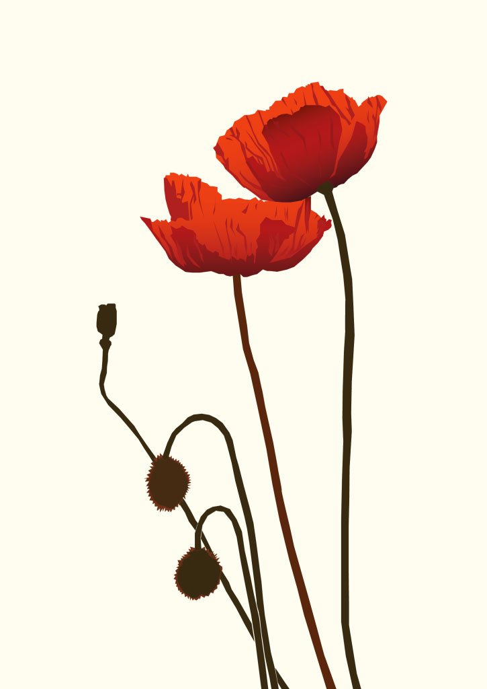
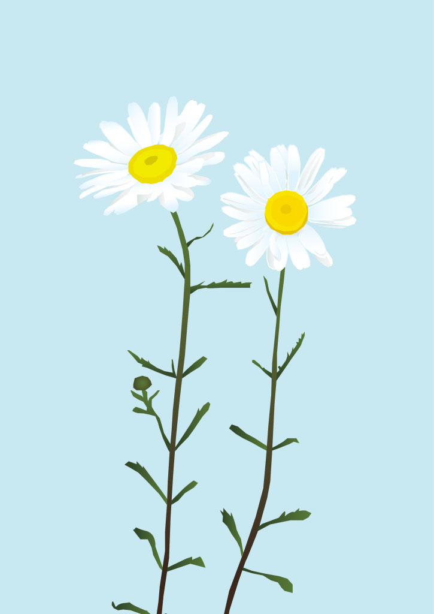
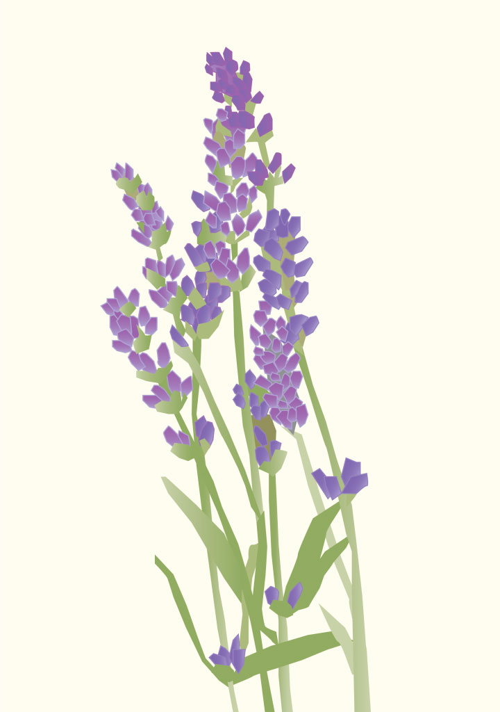
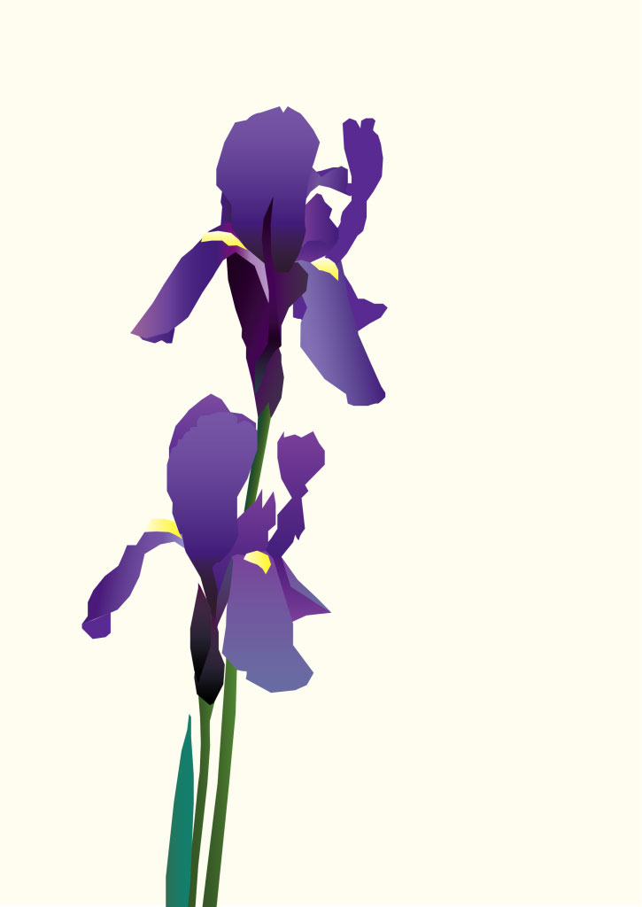
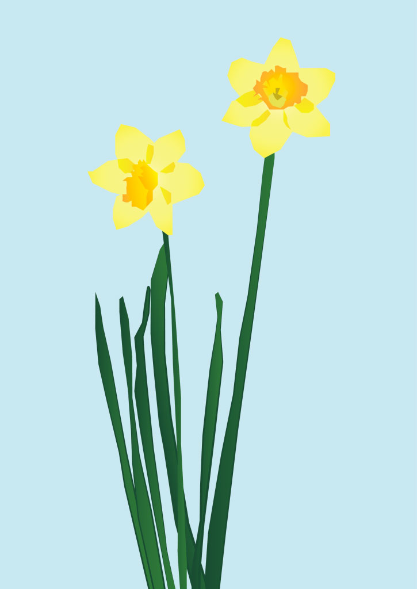

Vector Art Experiments
A portrait of one of my favorite musicians: Dessa.





Each flower was meticulously drawn using tiny straight lines, as a challenge in using the Adobe Illustrator pen tool without drawing curves.